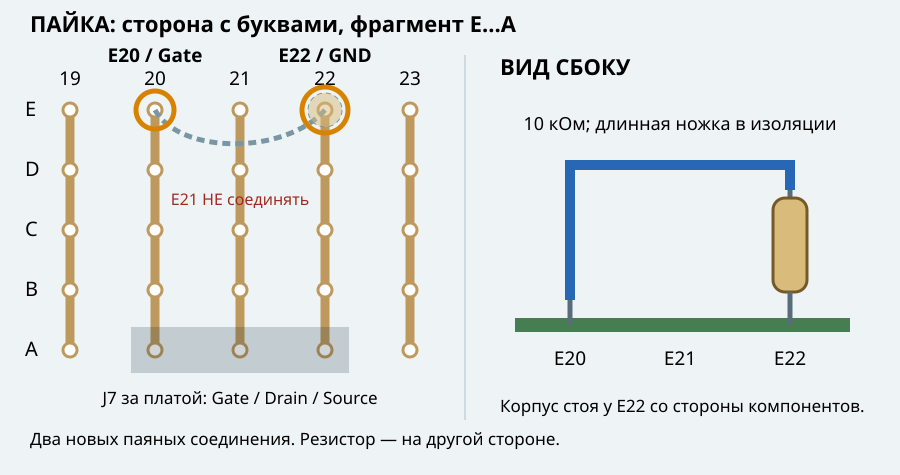
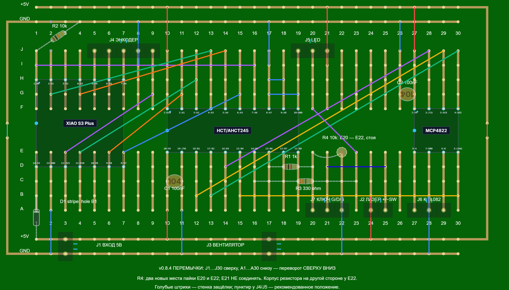
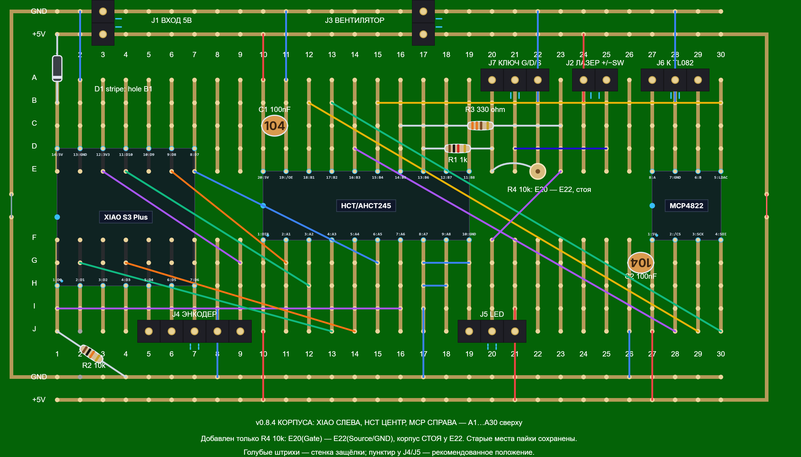

R4 = 10 кОм, не 1 кОм. E20 → E22. Корпус стоя у E22 на стороне компонентов; паять со стороны букв. E21 между ними НЕ соединять. Все прежние детали и 29 перемычек сохранены. Старый перегревавшийся HCT не устанавливать.



17 октября 2026. Единственное электрическое изменение относительно v0.8.3 — R4 между Gate и Source MOSFET. Старые 29 перемычек, все гнёзда, детали, шины, направления защёлок и ориентации микросхем сохранены. Новых проводов и разрезов нет. Прошивку из-за этого изменения менять не нужно.
R4 = 10 кОм (10 000 Ом), НЕ 1 кОм. Обычный выводной резистор 0,125 или 0,25 Вт, допуск 1% или 5%. Полярности нет. Перед пайкой проверить номинал мультиметром. R1 1 кОм и R2 10 кОм остаются на своих местах.
| Вывод нового R4 | Отверстие | Уже соединено медью с |
|---|---|---|
| Длинная согнутая ножка | E20 | A20 = J7.1 = Gate; D20 = конец R1 |
| Короткая ножка под стоящим корпусом | E22 | A22 = J7.3 = Source/GND |
E21 между ними НЕ соединять: это отдельная цепь Drain/минус лазера. Оба отверстия E20/E22 свободны в карте v0.8.3; не нужно помещать ножку в занятое отверстие A20/A22 разъёма или D20 резистора R1. Дорожки A…E каждой колонки уже соединены заводской медью.
1. Отключить сеть, внешний 5V и USB; отсоединить лазер и J7. Старый перегревавшийся HCT не устанавливать. Временную перемычку Gate–Source убрать.
2. Корпус R4 установить стоя на стороне корпусов, без заводских букв, у отверстия E22. Между отверстиями 5,08 мм, поэтому длинный корпус не нужно пытаться уложить плашмя между ними. Одна ножка коротко идёт в E22; вторую согнуть дугой к E20.
3. Длинную ножку изолировать тонкой термоусадкой либо подходящей изоляционной трубкой, оставив оголённым только конец для пайки. Она проходит над промежуточной дорожкой 21 и не должна касаться её площадок или соседних выводов. Корпус не прижимать вплотную к плате.
4. Припаять только E20 и E22 со стороны заводских букв. Левый/правый края сохраняются при перевороте сверху вниз. Не переставлять остальные детали или провода.
5. HCT и кабель J7 оставить отключёнными на время проверки сопротивления. Между A20 и A22 теперь должно быть около 10 кОм (диапазон 20 кОм или выше), а не прежнее OL. E20–A20 и E22–A22 должны иметь прямую связь. Убедиться, что новых замыканий на E21/Drain нет.
Основной вид — сторона корпусов без заводских надписей: XIAO слева, HCT в центре, MCP справа; A1…A30 сверху, J1…J30 снизу. USB и обе выемки слева. Самая верхняя шина GND, следующая +5V.
Сторона пайки с заводскими надписями получается переворотом сверху вниз вокруг горизонтальной оси. Слева направо всё ещё 1…30; J1…J30 сверху, A1…A30 снизу. Отверстия E20/E22 сохраняют свои имена, но находятся на другой высоте рисунка. Фабричные знаки +/- не заменяют согласованное назначение шин.
В редакторе R4 показан кружком у E22 и изогнутой ножкой к E20 — это вид стоящего резистора сверху, а не новый провод. На стороне пайки корпус полупрозрачен, потому что находится за платой. Картинка условная и не задаёт точную высоту конкретного резистора.
R4 удерживает Gate около Source при высокоомном выходе буфера, например при вынутом HCT. Он не защищает от пробоя MOSFET, обхода ключа проводкой или неисправного HCT, принудительно выдающего HIGH. Повреждённый HCT повторно не включать.
Проверены заводская медь, 42 физических вывода IC, цепи всех деталей, отсутствие коротких соединений/обрывов модели и свободные отверстия E20/E22. Отдельно сопоставлены со старой версией все 29 проводов и все прежние детали: изменений нет. R4 соединяет именно Gate и Source через 10 кОм; E21 остаётся отдельной цепью Drain.
Это проверка модели. Фактическая пайка R4 ещё не выполнена и не измерена. Правильность трёх проводов внешнего MOSFET принята по подтверждению владельца; её отдельная прозвонка не выполнялась.
| Контакт | Отверстие | Цепь |
|---|---|---|
| U2.1 | F10 | +5V |
| U2.11 | E19 | NC |
| U2.2 | F11 | SCK_3V3 |
| U2.12 | E18 | NC |
| U2.3 | F12 | MOSI_3V3 |
| U2.13 | E17 | LASER_5V |
| U2.4 | F13 | CS_3V3 |
| U2.14 | E16 | LED_5V |
| U2.5 | F14 | LDAC_3V3 |
| U2.15 | E15 | LDAC_5V |
| U2.6 | F15 | LED_3V3 |
| U2.16 | E14 | CS_5V |
| U2.7 | F16 | LASER_3V3 |
| U2.17 | E13 | MOSI_5V |
| U2.8 | F17 | GND |
| U2.18 | E12 | SCK_5V |
| U2.9 | F18 | GND |
| U2.19 | E11 | GND |
| U2.10 | F19 | GND |
| U2.20 | E10 | +5V |
| U3.1 | F27 | +5V |
| U3.5 | E30 | LDAC_5V |
| U3.2 | F28 | CS_5V |
| U3.6 | E29 | DAC_B |
| U3.3 | F29 | SCK_5V |
| U3.7 | E28 | GND |
| U3.4 | F30 | MOSI_5V |
| U3.8 | E27 | DAC_A |
| U1.5V | D1 | XIAO_5V |
| U1.GND | D2 | GND |
| U1.3V3 | D3 | +3V3 |
| U1.D10 | D4 | MOSI_3V3 |
| U1.D9 | D5 | NC |
| U1.D8 | D6 | SCK_3V3 |
| U1.D7 | D7 | LED_3V3 |
| U1.D0 | H1 | LASER_3V3 |
| U1.D1 | H2 | CS_3V3 |
| U1.D2 | H3 | NC |
| U1.D3 | H4 | LDAC_3V3 |
| U1.D4 | H5 | ENC_A |
| U1.D5 | H6 | ENC_B |
| U1.D6 | H7 | ENC_SW |
| J1.1 | BOTTOM GND 3 | GND |
| J1.2 | BOTTOM +5V 3 | +5V |
| J3.1 | BOTTOM GND 17 | GND |
| J3.2 | BOTTOM +5V 17 | +5V |
| J4.1 | J5 | ENC_A |
| J4.2 | J6 | ENC_B |
| J4.3 | J7 | ENC_SW |
| J4.4 | J8 | GND |
| J4.5 | J9 | +3V3 |
| J5.1 | J19 | GND |
| J5.2 | J20 | LED_DATA |
| J5.3 | J21 | +5V |
| J7.1 | A20 | GATE |
| J7.2 | A21 | LASER_RETURN |
| J7.3 | A22 | GND |
| J6.1 | A27 | DAC_A |
| J6.2 | A28 | GND |
| J6.3 | A29 | DAC_B |
| J2.1 | A24 | +5V |
| J2.2 | A25 | LASER_RETURN |
| R1.1 | D17 | LASER_5V |
| R1.2 | D20 | GATE |
| R2.1 | J1 | LASER_3V3 |
| R2.2 | TOP GND 4 | GND |
| R3.1 | C16 | LED_5V |
| R3.2 | C23 | LED_DATA |
| C1.1 | C10 | +5V |
| C1.2 | C11 | GND |
| C2.1 | G27 | +5V |
| C2.2 | G26 | GND |
| D1.1 | BOTTOM +5V 1 | +5V |
| D1.2 | B1 | XIAO_5V |
| R4.1 | E20 | GATE |
| R4.2 | E22 | GND |
| Провод | Цепь | Откуда | Куда |
|---|---|---|---|
| W01 | GND | LEFT GND LINK UP | LEFT GND LINK DOWN |
| W02 | +5V | RIGHT +5V LINK UP | RIGHT +5V LINK DOWN |
| W03 | +5V | J27 | TOP +5V 27 |
| W04 | GND | TOP GND 26 | J26 |
| W05 | +5V | TOP +5V 10 | J10 |
| W06 | +5V | A10 | BOTTOM +5V 10 |
| W07 | GND | I8 | TOP GND 8 |
| W08 | SCK_3V3 | E6 | G11 |
| W09 | LED_3V3 | E7 | G15 |
| W10 | GND | A2 | BOTTOM GND 2 |
| W11 | GND | BOTTOM GND 11 | A11 |
| W12 | LASER_3V3 | I1 | I16 |
| W13 | GND | B22 | BOTTOM GND 22 |
| W14 | +5V | B24 | BOTTOM +5V 24 |
| W15 | GND | B28 | BOTTOM GND 28 |
| W16 | GND | G17 | G19 |
| W17 | GND | H18 | H17 |
| W18 | GND | TOP GND 17 | I17 |
| W19 | +5V | TOP +5V 21 | I21 |
| W20 | MOSI_3V3 | E4 | H12 |
| W21 | CS_3V3 | G2 | J13 |
| W22 | LDAC_3V3 | G4 | J14 |
| W23 | +3V3 | E3 | G9 |
| W24 | CS_5V | D14 | J28 |
| W25 | SCK_5V | B12 | J29 |
| W26 | MOSI_5V | B13 | J30 |
| W27 | LDAC_5V | B15 | B30 |
| W28 | LASER_RETURN | D21 | D25 |
| W29 | LED_DATA | F20 | E23 |
Исходники: `tools/build_eplzon_v084.py`, `tools/verify_v084_connections.py`; отчёты: `v0.8.4-physical-audit.json`, `v0.8.4-addition-audit.json`, `v0.8.4-view-audit.json`.